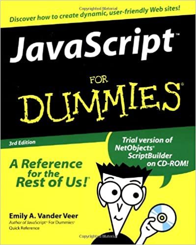

Just over one year ago, if you told me to read a simple “Hello World!” script and tell you how it worked…I could tell you was that there were what appeared to be words on the screen. To the old me, Python was a mythical language that only the most professional programmers understood and used. C was a passing grade and C++ means you were a fraction of a percent under a B-. Ruby and Perl were gems. PHP was some sort of disease. I knew nothing and could explain less.
And now, after one year of education at the University of Hawaii at Manoa’s Information and Computer Sciences program, I can confidently do things that I never thought I would be able to. I can make arrays and put things in them! I understand data types! I can create and manipulate objects! I can actually call myself a programmer and write code! With comments!
In the past, I have taken courses at the University of Hawaii that taught me Java for two semesters and Python for one. I am currently taking classes that will be using C, C++, and JavaScript. To say I am very inexperienced with these languages is a very accurate statement. I’ve been coding with JavaScript for roughly one week now…if you can even call it that. It’s more like fumbling around while desperately Googling how to do things while relying on my years’ worth of Java knowledge to pull me through.
It would be very unfair to JavaScript for me to make a claim that it is good or bad with my current knowledge. What I can say though, is that JavaScript seems to be Java with more functionality. Things like arrow functions, destructuring arrays, and the spread operator are quite nifty and simplify things greatly. Not having to declare data types for variables is universe altering. It makes coding so much easier. Why don’t other languages do this!
When I first learned about what Athletic Software Engineering and Workout of the Day were, I had a mild panic attack. I can make you a unit conversion program, no problem at all. But if you give me the details of what you want it to convert and tell me you want it in 10 minutes…we might have a problem here. It is a way of applying stressors and pressure that we will experience out in the working world. We get to practice quick thinking, working under time crunches, how to look up what we don’t know efficiently, and other traits that will make us better programmers. Just like running soccer drills or practicing your free throws, getting the practice in now is preparing us for the future.
It is amazing how quickly you can learn new things in the right environment with the right motivations. There have been so many situations where I didn’t think I could code a program or solve a problem due to inexperience and lack of knowledge. But I’ve been pleasantly surprised with how much I can dredge up from the depths of my brain and how quickly I can apply it to code something up. It’s moments like this that keep me going, and I hope to get better as I move along my classes and finish my degree.